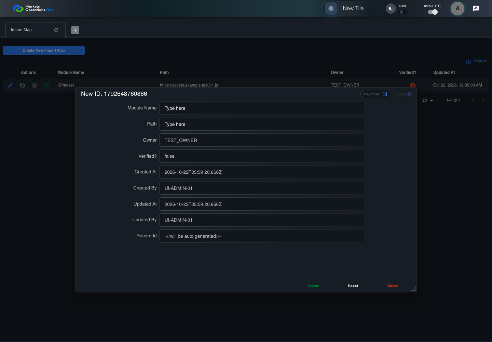

UI-ADM-MAP-002 actual administration UI with step evidence
PASS · application/run-050/ui-adm-map-002-actual-administration-ui-with-step-evidence-704dd191c70f-attempt-1 · ACTUAL_APPLICATION_LOCAL_SERVICES
Actual current React administration screens. Controlled browser login supplies UI-ADMIN-01 and TEST_OWNER, or the declared SUPER_USER. Controlled BFF routes return the case-declared records. Other controlled saves persist submitted field values. This run establishes frontend handling only. It does not execute BFF validation, storage, audit generation, or authorization.
2026-10-22T05:59:18.428Z to 2026-10-22T05:59:22.814Z
Assertions and result · Artifact manifest · Exact run inputs and source hashes
Result SHA-256:1483663e98004d2754fa1ef8971a1ce534ab23a7332eac249e285f4fc500ad6aMachine observations
- new-record-source-identity.json
f283583e91a56c66e57caf579acdd426cfd307a0184caefbb019279066d39f6a - ui-origin-admin-requests.json
1b5b081b762c7c3ab9ca0cf82e73c87577a3d72d0b127af4508e924e55f84301
Screenshot capture: CAPTURED. Named frames: 11.
Step screenshot evidence: COMPLETE. 10/10 canonical steps have execution screenshots.
Canonical step timeline
Given Admin A is authenticated as fixture UI-ADMIN-01 with the case-specific permissions
Execution: PASSED.
1. step-01 Visible state after step 1: Given Admin A is authenticated as fixture UI-ADMIN-01 with the case-specific permissions
2026-10-22T05:59:19.916Z · 1440×1000
Step: /Users/lushevol/code/github/ratan-release-impact/workbench/tasks/ui-test-coverage-20261022/test-cases.md:8171
SHA-256:e3b0f9fc19565c05531c6efe10482168b9bbf39577aa6c46d3b54491467406f9And the Import Map admin screen is open for UI-ADMIN-01; fixture record 101 is inactive and has Path https://assets.example.test/v1.js; its owner is TEST_OWNER
Execution: PASSED.
2. step-02 Visible state after step 2: And the Import Map admin screen is open for UI-ADMIN-01; fixture record 101 is inactive and has Path https://assets.example.test/v1.js; its owner is TEST_OWNER
2026-10-22T05:59:20.836Z · 1440×1000
Step: /Users/lushevol/code/github/ratan-release-impact/workbench/tasks/ui-test-coverage-20261022/test-cases.md:8172
SHA-256:8c5c1415a703219dbc7fa910fa08faeb5601d93a8f6d45681b924839af490a8fWhen Admin A clicks button named "Create New Import Map" inside the "Import Map" administration tabpanel
Execution: PASSED.3. step-03 Visible state after step 3: When Admin A clicks button named "Create New Import Map" inside the "Import Map" administration tabpanel
2026-10-22T05:59:21.089Z · 1440×1000
Step: /Users/lushevol/code/github/ratan-release-impact/workbench/tasks/ui-test-coverage-20261022/test-cases.md:8173
SHA-256:ef5623e1684010680b92df3f40afdf02f5d3d9fdb14775d7e13bc41105c80affThen dialog with source identity "new ID: <captured fixture timestamp>" inside the "Import Map" administration tabpanel is visible
Execution: PASSED.
4. step-04 Visible state after step 4: Then dialog with source identity "new ID: <captured fixture timestamp>" inside the "Import Map" administration tabpanel is visible
2026-10-22T05:59:21.182Z · 1440×1000
Step: /Users/lushevol/code/github/ratan-release-impact/workbench/tasks/ui-test-coverage-20261022/test-cases.md:8174
SHA-256:21b1930f022d7aa7d7c3785d8a25a016dfb3e53de4d8474296c3bb6fb456ccd6And button named "Create" inside the new-record dialog inside the "Import Map" administration tabpanel is visible
Execution: PASSED.
5. step-05 Visible state after step 5: And button named "Create" inside the new-record dialog inside the "Import Map" administration tabpanel is visible
2026-10-22T05:59:21.272Z · 1440×1000
Step: /Users/lushevol/code/github/ratan-release-impact/workbench/tasks/ui-test-coverage-20261022/test-cases.md:8175
SHA-256:21b1930f022d7aa7d7c3785d8a25a016dfb3e53de4d8474296c3bb6fb456ccd6And button named "Reset" inside the new-record dialog inside the "Import Map" administration tabpanel is visible
Execution: PASSED.
6. step-06 Visible state after step 6: And button named "Reset" inside the new-record dialog inside the "Import Map" administration tabpanel is visible
2026-10-22T05:59:21.390Z · 1440×1000
Step: /Users/lushevol/code/github/ratan-release-impact/workbench/tasks/ui-test-coverage-20261022/test-cases.md:8176
SHA-256:21b1930f022d7aa7d7c3785d8a25a016dfb3e53de4d8474296c3bb6fb456ccd6And button named "Close" inside the new-record dialog inside the "Import Map" administration tabpanel is visible
Execution: PASSED.
7. step-07 Visible state after step 7: And button named "Close" inside the new-record dialog inside the "Import Map" administration tabpanel is visible
2026-10-22T05:59:21.483Z · 1440×1000
Step: /Users/lushevol/code/github/ratan-release-impact/workbench/tasks/ui-test-coverage-20261022/test-cases.md:8177
SHA-256:21b1930f022d7aa7d7c3785d8a25a016dfb3e53de4d8474296c3bb6fb456ccd6And textbox named "Verified?" inside the new-record dialog inside the "Import Map" administration tabpanel has value "false"
Execution: PASSED.
8. step-08 Visible state after step 8: And textbox named "Verified?" inside the new-record dialog inside the "Import Map" administration tabpanel has value "false"
2026-10-22T05:59:21.573Z · 1440×1000
Step: /Users/lushevol/code/github/ratan-release-impact/workbench/tasks/ui-test-coverage-20261022/test-cases.md:8178
SHA-256:21b1930f022d7aa7d7c3785d8a25a016dfb3e53de4d8474296c3bb6fb456ccd6And textbox named "Created By" inside the new-record dialog inside the "Import Map" administration tabpanel has value "UI-ADMIN-01"
Execution: PASSED.
9. step-09 Visible state after step 9: And textbox named "Created By" inside the new-record dialog inside the "Import Map" administration tabpanel has value "UI-ADMIN-01"
2026-10-22T05:59:21.666Z · 1440×1000
Step: /Users/lushevol/code/github/ratan-release-impact/workbench/tasks/ui-test-coverage-20261022/test-cases.md:8179
SHA-256:21b1930f022d7aa7d7c3785d8a25a016dfb3e53de4d8474296c3bb6fb456ccd6And textbox named "Updated By" inside the new-record dialog inside the "Import Map" administration tabpanel has value "UI-ADMIN-01"
Execution: PASSED.
10. step-10 Visible state after step 10: And textbox named "Updated By" inside the new-record dialog inside the "Import Map" administration tabpanel has value "UI-ADMIN-01"
2026-10-22T05:59:21.764Z · 1440×1000
Step: /Users/lushevol/code/github/ratan-release-impact/workbench/tasks/ui-test-coverage-20261022/test-cases.md:8180
SHA-256:21b1930f022d7aa7d7c3785d8a25a016dfb3e53de4d8474296c3bb6fb456ccd6
Additional named frames

The final visible state after the named test assertions.
2026-10-22T05:59:21.918Z · 1440×1000Step: Test source: /Users/lushevol/code/github/ratan-release-impact/workbench/e2e/audit-specs/admin-expanded.spec.ts:15
SHA-256:
21b1930f022d7aa7d7c3785d8a25a016dfb3e53de4d8474296c3bb6fb456ccd6Screenshots establish visible state only. Assertions and traces support functional claims.